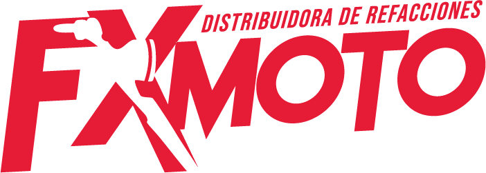

Recepción y envíos
Elige tu bodega
Ingresa con el usuario que te dio oficina. La primera entrada requiere internet.
Prueba piloto · inicia sesión con internet antes de salir a recibir. Revisa que no queden operaciones pendientes al terminar.